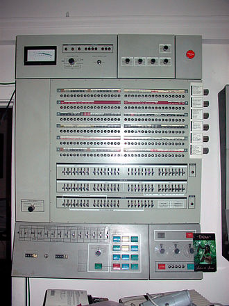

History of operating systems
Links:
Early computers were built to perform a series of single tasks, like a calculator. Basic operating system features were developed in the 1950s, such as resident monitor functions that could automatically run different programs in succession to speed up processing. Operating systems did not exist in their modern and more complex forms until the early 1960s. Hardware features were added, that enabled use of runtime libraries, interrupts, and parallel processing. When personal computers became popular in the 1980s, operating systems were made for them similar in concept to those used on larger computers.
In the 1940s, the earliest electronic digital systems had no operating systems. Electronic systems of this time were programmed on rows of mechanical switches or by jumper wires on plugboards. These were special-purpose systems that, for example, generated ballistics tables for the military or controlled the printing of payroll checks from data on punched paper cards. After programmable general purpose computers were invented, machine languages (consisting of strings of the binary digits 0 and 1 on punched paper tape) were introduced that sped up the programming process (Stern, 1981).[full citation needed] In the early 1950s, a computer could execute only one program at a time. Each user had sole use of the computer for a limited period and would arrive at a scheduled time with their program and data on punched paper cards or punched tape. The program would be loaded into the machine, and the machine would be set to work until the program completed or crashed. Programs could generally be debugged via a front panel using toggle switches and panel lights. It is said that Alan Turing was a master of this on the early Manchester Mark 1 machine, and he was already deriving the primitive conception of an operating system from the principles of the universal Turing machine.[9]
Later machines came with libraries of programs, which would be linked to a user's program to assist in operations such as input and output and compiling (generating machine code from human-readable symbolic code). This was the genesis of the modern-day operating system. However, machines still ran a single job at a time. At Cambridge University in England, the job queue was at one time a washing line (clothes line) from which tapes were hung with different colored clothes-pegs to indicate job priority.[citation needed]
An improvement was the Atlas Supervisor. Introduced with the Manchester Atlas in 1962, it is considered by many to be the first recognisable modern operating system.[10] Brinch Hansen described it as "the most significant breakthrough in the history of operating systems."[11]
